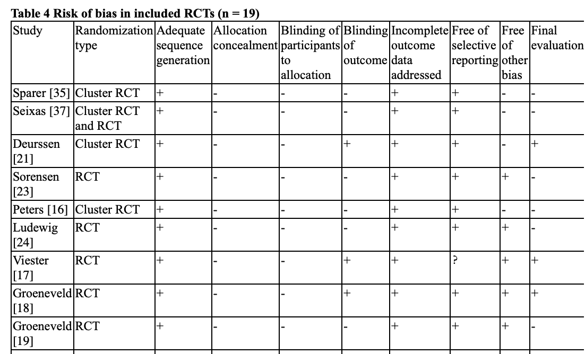

联合共建：银湾研究院、纳尼（深圳）咨询有限公司
电话：+86 13538048576地址：深圳市龙岗区龙城街道紫薇社区吉祥中路234号碧湖玫瑰园10栋303


2023年8月，银湾研究院研究团队在国际职业健康权威期刊《美国健康促进杂志》发表题为《建筑工人职业安全与健康干预措施的范围综述》的论文。该研究由我中心李悦博士与哈佛大学陈曾熙公共卫生学院社会与行为科学系合作完成，是首项系统整合“职业安全”与“健康促进”双重视角、针对建筑工人群体干预研究的国际范围综述，为超大城市高危职业人群的整合型健康管理政策提供了关键循证依据。
我中心研究团队对1990年至2019年间发表于PubMed及Web of Science核心数据库的1297篇文献进行了系统性筛选与双盲独立评阅，最终纳入24项干预研究。研究首次基于“多层级干预”理论框架，对干预措施的设计特征、效果异质性及失效原因进行了深度归因分析。研究覆盖美国、荷兰、丹麦、中国、澳大利亚、英国六国样本，系统梳理了包括粉尘与噪音暴露控制、防坠落培训、体力活动促进、戒烟、膳食改善、肌肉骨骼疼痛管理、心理健康支持等在内的多元化干预路径。
研究核心发现表明：17项研究报告了显著的干预效果，但仅有2项研究采用了职业安全与健康促进相整合的干预设计。这一严重失衡暴露了该领域长期存在的“安全-健康”二元分割范式——安全干预聚焦工伤预防，健康干预聚焦生活方式改变，二者在理论框架、实施主体与绩效评估上彼此割裂。研究进一步揭示，单纯个体层面的行为干预效果有限且难以持续，而将个体健康教育与工作场所环境改善、组织政策变革相结合的多层级干预，其戒烟效果可达纯个体干预的两倍。这一发现直接呼应了“互补性原理”：当工作场所同时存在化学危害暴露时，工人戒烟动机被显著抑制；唯有同步削减环境风险，个体健康行为改变才能获得正向激励。
从职业健康政策视角，本研究为深圳及粤港澳大湾区建筑业职业健康治理提供了三重关键启示：
第一，亟需推动建筑业职业健康监管从“事故预防”向“全生命周期健康保护”转型。研究表明，建筑工人慢性病所致死亡率已远超工伤事故，但现行监管体系仍以工伤发生率、职业病发病率为核心考核指标，对吸烟、饮酒、久坐等行为风险因素缺乏系统性干预。研究团队已就此向深圳市卫生健康委职业健康处提交政策简报，建议将建筑工人健康促进纳入“健康企业”评价指标体系，探索将职业健康检查与慢性病筛查服务有机整合。
第二，确立“环境-行为”协同干预作为政策工具包的核心组件。本研究发现，现有干预高度依赖培训、咨询等个体层面手段，而对工时制度、作业环境、现场餐饮供应等结构性决定因素干预极少。研究建议，在大型基建项目中试点“健康工地”认证标准，将工地食堂营养标签、吸烟区物理隔离、噪声分区管控等措施纳入政府投资工程招标加分项，以采购杠杆撬动企业健康管理投入。
第三，构建跨部门、跨学科的职业健康研究—政策—实践协作网络。本研究的另一项系统性发现是：干预失效的主因包括利益相关者参与缺失、干预剂量不足、结局测量敏感度低等实施科学问题，而非干预理念本身失效。基于此，我中心正联合深圳市建筑工务署、市职业病防治院及多家龙头建筑企业，共同发起“健康工地”实施科学合作网络，致力于将国际循证干预策略进行本地化调适与实效验证。
本研究是银湾研究院“重点职业人群健康公平”系列研究的重要里程碑。目前，研究团队正依托本项范围综述的证据图谱，开发面向建筑企业管理者的“职业安全与健康整合干预决策工具箱”，并受某世界500强建筑集团委托，开展为期18个月的整群随机对照试验，以验证多层级干预对工人代谢综合征指标及工伤发生率的联合效应。我们期待与更多关注职业人群健康的政府监管部门、行业协会、工会组织及技术解决方案供应商合作，共同将“体面劳动”与“健康工作”的抽象理念，转化为可测量、可复制、可扩面的制度安排与技术路径。
如您对本研究的证据图谱、政策转化或企业合作服务感兴趣，欢迎与我们联系：contact@greybay.org。
论文信息：
A Scoping Review of Interventions to Improve Occupational Safety and Health of Construction Workers. Hana Hayashi, Yue Li et al. American Journal of Health Promotion, 2023 Aug 11;37(8):1162-1170.
DOI: 10.1177/08901171231193783 │ PMCID: PMC10631273
原文链接：https://pmc.ncbi.nlm.nih.gov/articles/PMC10631273/
